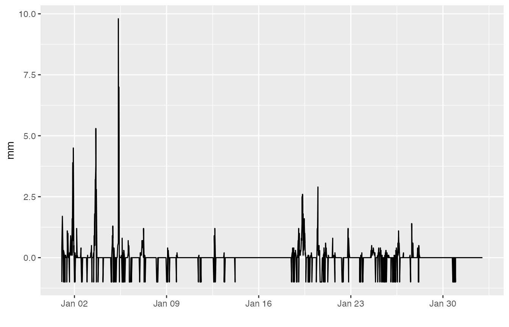
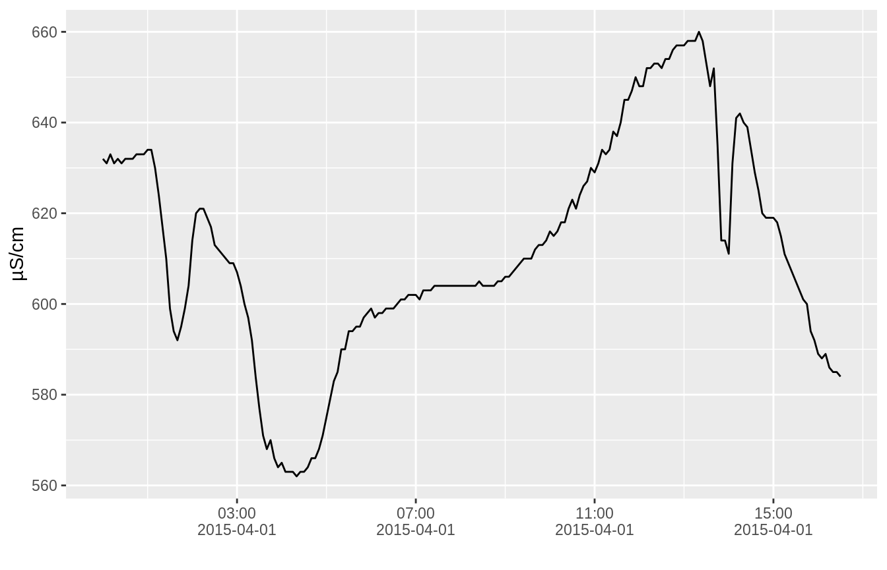

vignettes/data_loaders_examples.Rmd
data_loaders_examples.RmdWe regularly get data sets (e.g. csv) from external partners with specific data formats. To overcome redundant work in writing custom functions to load these data sets, this vignette provides some examples for custom data readers provided by the inborutils package.
The Dutch meteoroligcal institute, KNMI, provides a webservice to query and download data. This tutorial provides more information about their service.
For the hourly data, the R function download_knmi_data_hour facilitates the download of the data. To download data, the required inputs are the stations, variables, a start_date and an end_date.
In order to have an idea about the measurement stations that can be used, KNMI provides an overview list here.
The variables, for which both a group name or a variable name can be used, also provided in the KNMI documentation:
| group name | variable name | description |
|---|---|---|
| WIND | DD:FH:FF:FX | wind |
| TEMP | T:T10N:TD | temperature |
| SUNR | SQ:Q | sunlight duration, global radiation |
| PRCP | DR:RH | rainfall, pet |
| VICL | VV:N:U | sight, cloudiness, relative humidity |
| WEER | M:R:S:O:Y:WW | weather types |
| ALL | all variabelen |
Hence, for a given start (e.g. January 1st 2012) and end date (February 1st 2012), the data download for rainfall data in Vlissingen (310) and Wesdorpe (319), writing the output to a file called knmi_download.csv, can be started as follows:
response <- download_knmi_data_hour(c(310, 319), "PRCP",
"2012-01-01", "2012-02-01",
output_file = "knmi_download.csv")When chosen the rainfall data only, the package already includes a specific function to read the rainfall data (a more general functionality is on the todo-list, feel free to extend the existing function):
## value datetime unit variable_name longitude latitude
## 1 -1.0 2012-01-01 01:00:00 mm precipitation 3.596 51.442
## 2 1.7 2012-01-01 02:00:00 mm precipitation 3.596 51.442
## 3 0.4 2012-01-01 03:00:00 mm precipitation 3.596 51.442
## 4 -1.0 2012-01-01 04:00:00 mm precipitation 3.596 51.442
## 5 0.2 2012-01-01 05:00:00 mm precipitation 3.596 51.442
## 6 0.0 2012-01-01 06:00:00 mm precipitation 3.596 51.442
## location_name source_filename quality_code
## 1 VLISSINGEN knmi_download.csv
## 2 VLISSINGEN knmi_download.csv
## 3 VLISSINGEN knmi_download.csv
## 4 VLISSINGEN knmi_download.csv
## 5 VLISSINGEN knmi_download.csv
## 6 VLISSINGEN knmi_download.csvFrom which a time series plot can be made:
library(ggplot2)
ggplot(rain_knmi_2012, aes(x = datetime, y = value)) +
geom_line() +
xlab("") + ylab("mm")
From the figure, it gets clear that KNMI uses -1 to define Nan values.
When receiving data from MOW (apart from using the waterinfo API), the file format of MOW data sets looks as follows:
Station Name: Destelbergen SF/Zeeschelde
Station Number: zes57n-SF-CM
River: Zeeschelde
Operator: -
Easting: 109591
Northing: 192793
Datum: 0.000
Parameter Name: Cond
Parameter Type: Cond
Time series Name: Destelbergen SF/Zeeschelde / Cond / zes57n-SF.Cond.5
Time series Unit: µS/cm
Time level: High-resolution
Time series Type: Instantaneous value
Time series equidistant: yes
Time series value distance: 5 Minute(s)
Time series quality: 2
Time series measuring system: ---
Date Time Cond [µS/cm] Quality flag Comments
01/04/2015 00:00:00 631.996 G
01/04/2015 00:05:00 631.007 G
01/04/2015 00:10:00 632.993 G
01/04/2015 00:15:00 631.004 G
01/04/2015 00:20:00 631.996 G
01/04/2015 00:25:00 631.004 G
01/04/2015 00:30:00 632.000 G
01/04/2015 00:35:00 632.000 G
...A lot of the information is provided in the header, which we would like to combine with the time series itself. The function read_mow_data is a tailor-made function to load this file format into a data.frame:
## # A tibble: 6 x 10
## datetime value quality_code quality_comments location_name
## <dttm> <dbl> <chr> <chr> <chr>
## 1 2015-04-01 00:00:00 632. " G" <NA> Destelbergen…
## 2 2015-04-01 00:05:00 631. " G" <NA> Destelbergen…
## 3 2015-04-01 00:10:00 633. " G" <NA> Destelbergen…
## 4 2015-04-01 00:15:00 631. " G" <NA> Destelbergen…
## 5 2015-04-01 00:20:00 632. " G" <NA> Destelbergen…
## 6 2015-04-01 00:25:00 631. " G" <NA> Destelbergen…
## # … with 5 more variables: variable_name <chr>, unit <chr>,
## # longitude <dbl>, latitude <dbl>, source_filename <chr>(Remark: this example file is provided by the package itself, see also on github)
A time series plot can be made for these data as well:
library(ggplot2)
ggplot(conductivity_mow, aes(x = datetime, y = value)) +
geom_line() +
xlab("") + ylab("µS/cm") +
scale_x_datetime(date_labels = "%H:%M\n%Y-%m-%d", date_breaks = "4 hours")
When receiving data from the Belgian Meteorological Institute, KMI, the format of the data file looks as follows (at least for some project we did):
date;JAAR;MAAND;DAG;UUR;STATION;NEERSLAG(mm)
2012-1-1_1;2012;1;1;1;SINT_KATELIJNE_WAVER;0
2012-1-1_2;2012;1;1;2;SINT_KATELIJNE_WAVER;0
2012-1-1_3;2012;1;1;3;SINT_KATELIJNE_WAVER;0
2012-1-1_4;2012;1;1;4;SINT_KATELIJNE_WAVER;0
2012-1-1_5;2012;1;1;5;SINT_KATELIJNE_WAVER;1.1
2012-1-1_6;2012;1;1;6;SINT_KATELIJNE_WAVER;0.2
2012-1-1_7;2012;1;1;7;SINT_KATELIJNE_WAVER;0
2012-1-1_8;2012;1;1;8;SINT_KATELIJNE_WAVER;0
2012-1-1_9;2012;1;1;9;SINT_KATELIJNE_WAVER;0
2012-1-1_10;2012;1;1;10;SINT_KATELIJNE_WAVER;0.8
2012-1-1_11;2012;1;1;11;SINT_KATELIJNE_WAVER;0.1
...To read the data and provide it into a similar format as the previous time series, the function read_kmi_data is available in the inborutils package:
## # A tibble: 6 x 7
## datetime location_name value unit variable_name
## <dttm> <chr> <dbl> <chr> <chr>
## 1 2012-01-01 01:00:00 SINT_KATELIJ… 0 mm precipitation
## 2 2012-01-01 02:00:00 SINT_KATELIJ… 0 mm precipitation
## 3 2012-01-01 03:00:00 SINT_KATELIJ… 0 mm precipitation
## 4 2012-01-01 04:00:00 SINT_KATELIJ… 0 mm precipitation
## 5 2012-01-01 05:00:00 SINT_KATELIJ… 1.1 mm precipitation
## 6 2012-01-01 06:00:00 SINT_KATELIJ… 0.2 mm precipitation
## # … with 2 more variables: source_filename <chr>, quality_code <chr>(Remark: this example file is provided by the package itself, see also on github)
To extract coordinate and date information from a kml file, the function load_kml
To read the data and provide it into a similar format as the previous time series, the function read_kml_file is available in the inborutils package:
## datetime x y
## 1 2017-09-20 20:45:00 4.627116 50.99224
## 2 2017-09-23 10:15:00 4.626988 50.99254
## 3 2017-09-23 11:05:00 4.626714 50.99274
## 4 2017-09-24 22:40:00 4.651573 50.98692
## 5 2017-09-25 10:15:00 4.651294 50.98704
## 6 2017-09-25 18:50:00 4.650760 50.98626(Remark: this example file is provided by the package itself, see also on github)